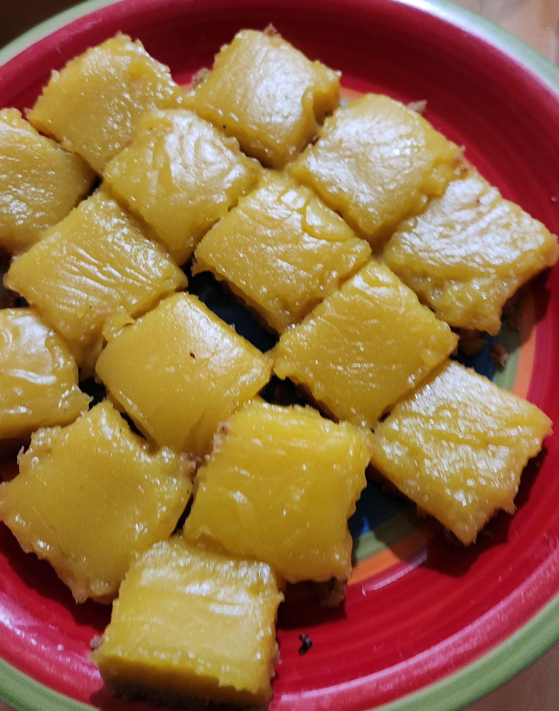

About the recipe
This is my favorite lemon bar recipe to make. I have found no equals after baking about 6 different other recipes. It originally came to my attention in this video and since I haven't made a different one. It is made by one of the contesstants that appeared on the Great British Baking Show and I always look to this channel to find more recipies.
Recipe
Ingredients
Crust
- 140g (10 Tbsp) unsalted butter
- 175g (1-1/4 cup) all-purpose flour
- 50g (1/4 cup) sugar
- 5g (1-1/2 tsp) kosher salt (sub: 3/4 tsp fine sea salt OR table salt)
- 1 tbsp (15mL) water
Filling
- 300g (1-1/2 cups) sugar
- 54g (6 Tbsp) all purpose flour
- Pinch of salt
- 1/16 tsp ground turmeric (optional)
- 1/2 tsp citric acid (optional, sub: 1-1/2 tsp cream of tartar)
- 3 large eggs (~50g each w/o shell)
- 3 egg yolks (~20g each)
- ~17g (~2 Tbsp packed) lemon zest (zest the lemons needed for 200mL juice)
- 200mL (200g) lemon juice (about 3-4 lemons)
- 84g (6 Tbsp) unsalted butter
Garnish
- Powdered sugar, for dusting (optional)
Instructions
Prep- Pre-heat oven to 350°F (175°C) with the rack in the middle position.
- Line a 9” x 9” baking pan (can be metal, glass, or ceramic) with parchment paper.
- Measure out all crust ingredients and have them ready.
- Make Browned Butter.
- Add salt and sugar, stirring to incorporate. Mix in flour until well combined and no dry flour remains. The mixture will be clumpy and sandy.
- Add water and stir thoroughly for a homogenous dough.
- Transfer dough to pan. Press into an even layer with hands or bottom of a cup. Prick all over with a fork.
- Bake for 20-25 minutes, until evenly golden with slightly browned edges.
- Wipe pan used for crust to remove excess debris. Add all filling ingredients except lemon juice and butter. Stir to combine.
- Add lemon juice and stir until evenly mixed.
- Cook over medium-low heat, stirring and scraping constantly. When filling begins to thicken, reduce heat to low. Cook until filling reaches 160-165°F (70-75°C), is slightly thickened, and coats spoon. Texture should be halfway between melted ice cream and shampoo.
- Remove from heat. Add butter, stir to melt and combine.
- Strain filling onto baked crust. Tilt pan to spread evenly.
- Bake for 7-15 minutes, until the filling is set with slightly puffed edges. The filling should barely jiggle when the pan is shaken.
- Allow the bars to cool completely at room temperature for at least 1.5 hours. If ambient temperature is very warm, chill the bars in the fridge, uncovered.
- Lift cooled bars from pan. Cut with sharp knife, wiping blade between cuts with a damp towel. Trim 1/4" (0.5 cm) from all sides. Cut into desired size (I like 4x4 for 16 pieces).
- Optional: Dust with powdered sugar. Serve immediately.
Here is a picture of the last time I baked them. I really enjoy the sour taste so I don't use sugar on top. The hardest part of the recipe for me the first time was ensuring the butter didnt burn when browning it. Also the measurements need to be exact to have the best results. I really recomend weighing the ingredients for the best result.
